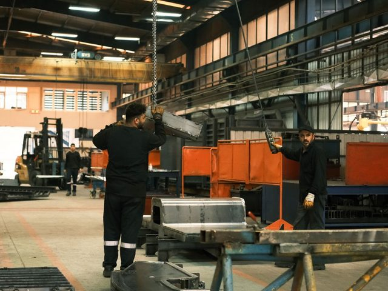
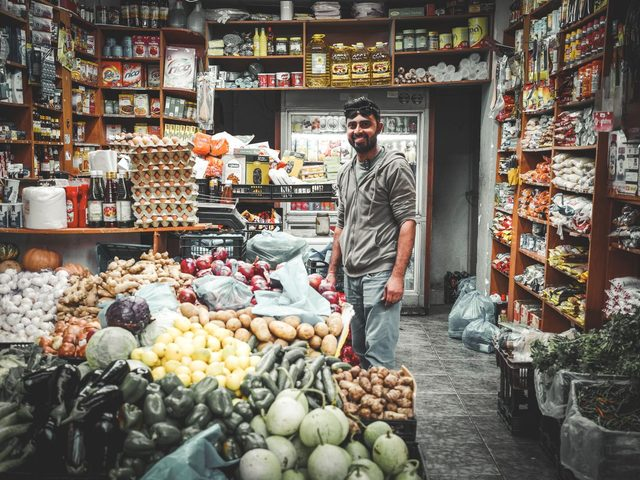

VOCABULARY · 主題 2000 字 UNIT 17
Places & locations．地點與位置
表示位置、方向的字，和城市裡常見的地點，共 41 個字。注意 in front of、in the middle of 的說法，以及問路怎麼說。
共 41 個單字．點 🔊 聽發音
1hereadv./n.
這裡
前面不加 to／at：come here
Come here and look at this!過來看這個！
2thereadv./n.
那裡
there is／there are 有…
We will go there by bus.我們會搭公車去那裡。
3backadv./n.
回原處；後面
come back 回來；at the back 在後面
Please put the book back on the shelf.請把書放回書架上。
4frontn./adj.
前面
in front of 在…前面
There is a big tree in front of my house.我家前面有一棵大樹。
5leftadj./adv./n.
左邊（的）；向左
turn left 左轉
Turn left at the corner.在轉角左轉。
6middlen.
中間
in the middle of 在…中間
The table is in the middle of the room.桌子在房間的中間。
7rightadj./adv./n.
右邊（的）；向右；對的
on your right 在你的右手邊
The bank is on your right.銀行在你的右手邊。
8eastn./adj.
東方（的）
the east 東方
The sun rises in the east.太陽從東邊升起。

9westn./adj.
西方（的）
the west 西方
The sun sets in the west.太陽從西邊落下。
10southn./adj.
南方（的）
in the south of 在…南部
Kaohsiung is in the south of Taiwan.高雄在台灣南部。
11northn./adj.
北方（的）
in the north of 在…北部
Taipei is in the north of Taiwan.台北在台灣北部。
12topn.
頂部；最高點
on (the) top of 在…上面
There is a flag on the top of the building.大樓的頂端有一面旗子。

13bakeryn.
麵包店
複數 bakeries
The bakery sells fresh bread every morning.這家麵包店每天早上賣新鮮的麵包。

14bankn.
銀行
Mom went to the bank to get some money.媽媽去銀行領錢。

15beachn.
海灘
複數 beaches
We played in the sand on the beach.我們在海灘上玩沙。

16bookstoren.
書店
book + store
I bought two comic books at the bookstore.我在書店買了兩本漫畫。

17churchn.
教堂
複數 churches
There is an old church in the town.鎮上有一座古老的教堂。

18department storen.
百貨公司
The department store is very crowded on weekends.週末百貨公司人很多。

19factoryn.
工廠
複數 factories
My uncle works in a car factory.我叔叔在汽車工廠工作。

20hospitaln.
醫院
in the hospital 住院
Grandpa stayed in the hospital for a week.爺爺住院住了一個星期。

21hoteln.
飯店；旅館
We stayed at a hotel near the beach.我們住在海灘附近的飯店。
22marketn.
市場
night market 夜市
Mom buys fresh fish at the market.媽媽在市場買新鮮的魚。
23museumn.
博物館
We saw old paintings at the museum.我們在博物館看了古老的畫。

24officen.
辦公室
Dad's office is on the tenth floor.爸爸的辦公室在十樓。

25parkn./v.
公園；停車
park the car 停車
Let's play badminton in the park.我們去公園打羽毛球吧。

26pooln.
游泳池
= swimming pool
The kids are swimming in the pool.孩子們在游泳池裡游泳。

27post officen.
郵局
I mailed a letter at the post office.我在郵局寄了一封信。

28police stationn.
警察局
police 警察
He took the lost wallet to the police station.他把撿到的錢包送到警察局。

29restroomn.
洗手間；廁所
公共場所的廁所
Excuse me. Where is the restroom?不好意思，請問洗手間在哪裡？

30restaurantn.
餐廳
Let's have dinner at a Japanese restaurant.我們去日本餐廳吃晚餐吧。

31shopn./v.
商店；購物
go shopping 去購物
There is a flower shop next to my school.我學校旁邊有一家花店。

32storen.
店；商店
convenience store 便利商店
The store opens at ten in the morning.這家店早上十點開門。

33supermarketn.
超級市場
super + market
We buy milk and eggs at the supermarket.我們在超市買牛奶和蛋。
34templen.
寺廟；神殿
Many people visit the temple at Chinese New Year.過年時很多人去廟裡拜拜。

35theatern.
劇院；戲院
英式拼法 theatre；movie theater 電影院
We watched a play at the theater.我們在劇院看了一齣戲。

36zoon.
動物園
We saw pandas at the zoo.我們在動物園看到了熊貓。

37cityn.
城市
複數 cities
Taipei is a big city.台北是一個大城市。

38countryn.
國家；鄉下
複數 countries；in the country 在鄉下
Japan is a beautiful country.日本是一個美麗的國家。

39farmn.
農場
farmer 農夫
There are cows and pigs on the farm.農場上有牛和豬。
40placen.
地方；場所
This is a nice place for a picnic.這裡是野餐的好地方。

41townn.
城鎮；小鎮
My grandparents live in a small town.我的祖父母住在一個小鎮。
FOCUS
說位置的片語
| 片語 | 中文 | 例句 |
|---|---|---|
| in front of | 在…前面 | The bus stop is in front of the bank. |
| at the back of | 在…後面 | The pool is at the back of the hotel. |
| in the middle of | 在…中間 | The park is in the middle of the city. |
| on the left / on the right | 在左邊／在右邊 | The zoo is on the left. |
| on (the) top of | 在…上面 | There is a cat on top of the car. |
| next to | 在…旁邊 | The bakery is next to the bookstore. |
here、there 前面不加介系詞：Come here.（不說 come to here）
FOCUS
東西南北
| 英文 | 中文 | 例句 |
|---|---|---|
| north | 北 | Taipei is in the north of Taiwan. |
| south | 南 | Kaohsiung is in the south of Taiwan. |
| east | 東 | The sun rises in the east. |
| west | 西 | The sun sets in the west. |
中文說「東南西北」，英文習慣說 north, south, east and west；方位前面要加 the。
FOCUS
問路和指路
| 英文 | 中文 |
|---|---|
| Excuse me. Where is the post office? | 不好意思，請問郵局在哪裡？ |
| How can I get to the zoo? | 我要怎麼去動物園？ |
| Go straight and turn left at the corner. | 直走，在轉角左轉。 |
| It's on your right. | 在你的右手邊。 |
| It's across from the hospital. | 在醫院對面。 |